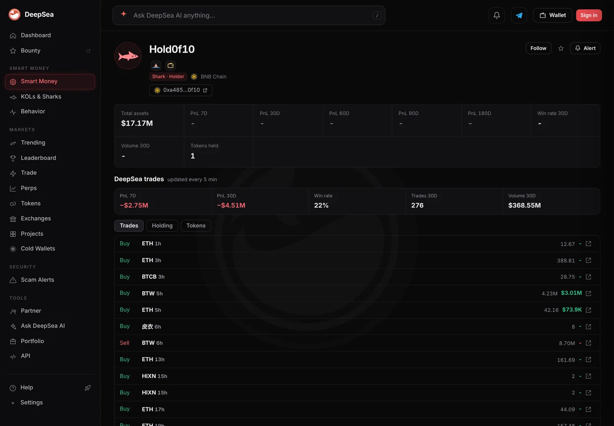

98 sharks lost $15.7 million in a week. Two BNB Chain wallets lost $5.3 million of it
Only 27 of 98 big wallets in DeepSea's live feed closed the week with a profit, and the winners made just $101,900 together. BNB Chain and Ethereum took the worst hits.
Key points
- 98 shark wallets in DeepSea's realized PnL table closed trades in the 7 days to 12:38 a.m. ET on November 15, 2026. They lost $15,690,259 together, and only 27 were in profit.
- Twelve BNB Chain sharks lost $7.23 million. Two of them, which DeepSea calls Hold0f10 and Hold116d, lost $5.33 million between them.
- Over 30 days, 161 sharks in the table are down $27.03 million. On November 4 the same table showed 129 sharks down $10.68 million.
 What DeepSea's data shows
What DeepSea's data shows
DeepSea publishes a realized profit and loss table for wallets in its live feed. Realized means closed trades only, priced first in, first out. LC Insight added up the 7-day figures for every wallet DeepSea tags as a shark. This is a different set from the leaderboard on DeepSea's KOLs and Sharks page, which ranks other wallets.
The total: 98 sharks, minus $15,690,259. The 27 winners made $101,900 combined. The losers gave up $15.79 million. Across 24,675 closed trades, 6,735 were winners, about 27%.

Data: DeepSea (desea.io), checked November 15, 2026, 12:38 a.m. ET.
Where the losses were
Shark wallets in DeepSea's live feed lost $15,690,259 on closed trades in the 7 days to 12:38 a.m. ET on November 15, 2026. Only 27 of the 98 made money, and two BNB Chain wallets, Hold0f10 and Hold116d, lost $5.33 million between them.
BNB Chain was the worst: 12 sharks, minus $7,234,332, with 3 in profit. Ethereum came next with 16 sharks down $4,102,568. Two sharks on Monad lost $2,185,194, nearly all of it one wallet. Optimism's 21 sharks lost $1,409,821. Arbitrum's 13 were close to flat, down $14,915.
Shark realized PnL by chain, 7 days
US$ million
7 days to 12:38 a.m. ET, November 15, 2026. Source: DeepSea realized PnL table, LC Insight totals.
The two BNB Chain wallets
Hold0f10 lost $2.75 million in 7 days and $4.51 million in 30, its DeepSea page shows. It made 276 trades in 30 days on $368.55 million of volume and won 22% of its trades. It still holds $17.17 million in assets. Its recent trades include a sale of 8.70 million BTW about six hours before our check and a buy of 4.23 million BTW for $3.01 million an hour later.
Hold116d lost $2.57 million on BNB Chain in 7 days and $2.90 million in 30, the table shows. The same address also trades on Ethereum, where it lost $337,900 in the week, so across chains it is down about $2.91 million for 7 days and $3.17 million for 30.

The market around them
Prices fell across the board. CoinGecko had bitcoin at $64,744 at 12:46 a.m. ET, down 3.3% in 24 hours. Ether was at $1,805, down 4.9%, and BNB at $595, down 3.6%.
On November 4, the same table showed 129 sharks down $10.68 million over 30 days. Now 161 sharks are down $27.03 million over 30 days, and 48 are in profit.
What the numbers mean
Realized profit and loss counts only trades a wallet has closed. A shark that buys a token and still holds it shows no result until it sells. So the $15.7 million is money already lost on finished trades this week, not a paper loss on coins still held. The table shows what wallets did, not why.
LC Insight analysis
This section is our reading of the facts above, not a statement of fact.
- We think the striking number is the split: winners made about $102,000 in a week, losers about $15.8 million. Size bought these wallets no protection in a falling market.
- Hold0f10 traded $368.55 million in a month. With volume that high, small losses per trade add up fast.
- The table only counts closed trades. Wallets holding coins bought higher may have more unrealized losses that do not show here.
What's next
- Whether Hold0f10 keeps trading BTW in multimillion-dollar size
- Whether BNB Chain sharks cut their losses next week
- Whether bitcoin holds near $65,000
Disclaimer. This article is based on public information and the sources listed below as of the update time shown. It is for information only and is not investment, legal or tax advice. Figures may change as companies and authorities publish new data.
Sources
- DeepSea, realized PnL table, 7 and 30 days (read November 15, 2026, 12:38 a.m. ET)
- DeepSea, Hold0f10 wallet page on BNB Chain (read November 15, 2026, 12:44 a.m. ET)
- DeepSea, Hold116d wallet page on BNB Chain (read November 15, 2026, 12:44 a.m. ET)
- DeepSea, KOLs and Sharks page (read November 15, 2026, 12:44 a.m. ET)
- CoinGecko, Bitcoin (BTC) price (read November 15, 2026, 12:46 a.m. ET)
- CoinGecko, Ethereum (ETH) price (read November 15, 2026, 12:46 a.m. ET)
- CoinGecko, BNB price (read November 15, 2026, 12:46 a.m. ET)